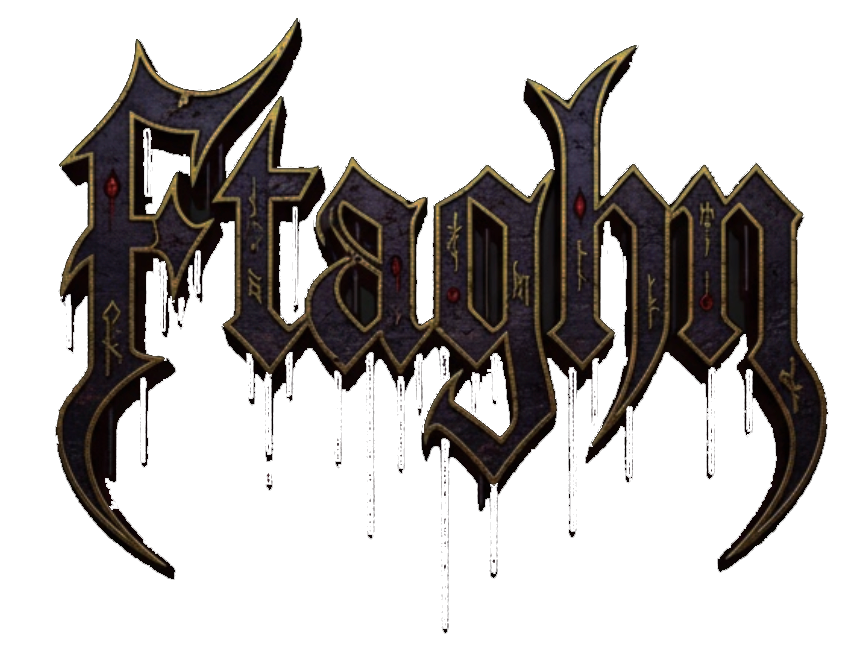
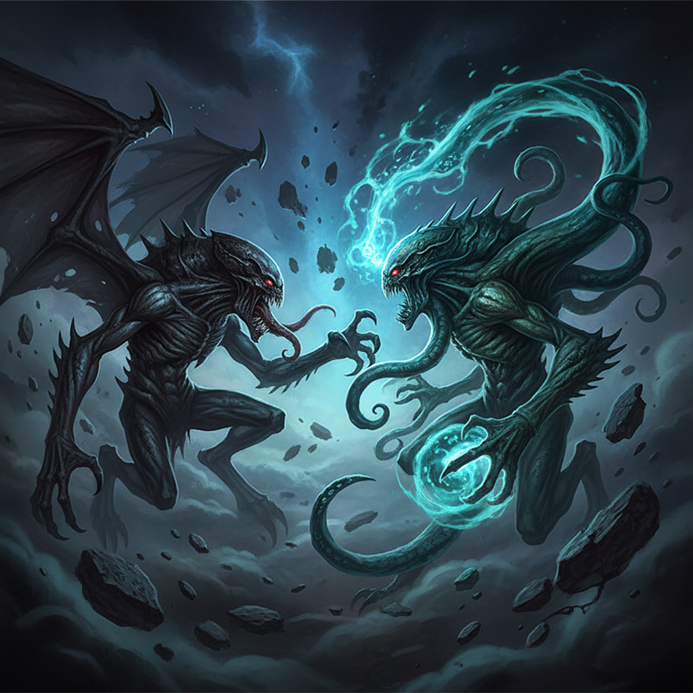

| Effect / Keyword | Gameplay Effect |
|---|---|
| Rhan-Tegoth / The Frozen Fear | Red player: On a **Leap** move with **zero captures** that creates a cluster of $\ge 5$ Red pieces, all adjacent Blue pieces are converted into **Permanent Obstacles**. (Simple/Elder God difficulty only) |
| Hastur / Unspeakable Oath | Red player: Makes 4 consecutive **Clone** moves to spawn **one extra Red piece** randomly. |
| Yog-Sothoth / Dimensional Toll | Red player: On a Leap capturing $\ge 2$ pieces, converts all 8 adjacent squares around the destination into neutral **Obstacles**. |
| Ghroth / Ghroth's Orbit | Red player: 5% chance after Red's turn to **shuffle all pieces** within a random $3 \times 3$ area. |
| Azathoth / Azathoth's Entropy | Red player: On a Clone move when piece/empty count is large, converts **3 random empty cells** into temporary **Obstacles**. |
| Ithaqua / Cold Wind | Red player: On a Leap move with zero captures and a vulnerable source, the abandoned square converts into an **Obstacle**. |
| Abhoth / Annihilation | Opponent moves adjacent to $\ge 6$ Abhoth pieces, resulting in the **annihilation** (removal) of the opponent's attacking piece. |
| Shoggoth / The Sprawl | Blue (AI) player: 10% chance per turn to execute up to **3 random Clone moves** (rapid expansion). |
| Nyarlathotep / Crawling Chaos | Blue (AI) player: 5% chance when Red clicks a piece to **forcibly select a random adjacent Red piece** for the move source. |
| Yibb-Tstll / Obstacle Volatility | Any player: If a capture occurs, randomly destroys one `OBSTACLE` (to Empty) or fortifies it (to `PERMANENT_OBSTACLE`). |
| Idha / Sleeper / Idha's Slumber | Red player: If name is selected, the main **Game Timer stops completely** (Factor = 0). |
| Eihort / Dimensional Stasis | Red player: If name is selected, the main **Game Timer runs at 50% speed** (Factor = 0.5). |
| Eihort / Time Surge | Blue (AI) player: If name is selected, the main **Game Timer runs at 200% speed** (Factor = 2.0). |
| Shudde M'ell / Gluttony / Excess / Excessive Space | Red player: If name is selected **before the first move**, the board permanently **expands to $9 \times 9$**. |
| — / Base Toll | All players: Hard difficulty and late game condition gives a 20% chance to **flip the player's intended move type** (Clone $\leftrightarrow$ Leap). |
Ftaghn is a strategy game played on a 7x7 grid where two players, with red and blue pieces, start in opposite corners. On your turn, you can either jump your piece two spaces in any direction (horizontal, vertical, or diagonal) or grow by placing a new piece on an empty adjacent square. All of your opponent's pieces next to the destination square are captured and converted to your color. The player with the most pieces at the end of the round, or the first to capture all of the opponent's pieces wins.

